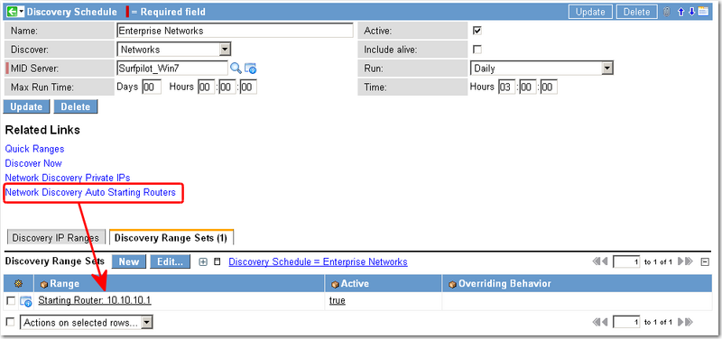
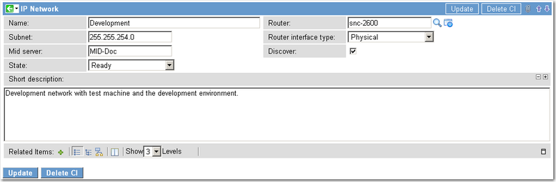
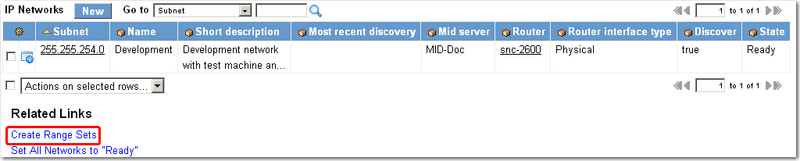

Network Discovery
| |
Note: This article applies to Fuji and earlier releases. For more current information, see Network Discovery at http://docs.servicenow.com
The ServiceNow Wiki is no longer being updated. Visit http://docs.servicenow.com for the latest product documentation. |
Contents
1 Overview
Network Discovery discovers the internal IP networks within your organization. Discovery uses the information it gathers to update routers and Layer 3 switches in the CMDB. Network Discovery is performed by a single MID Server that begins its scan on a configurable list of starting (or seed) routers. Typically, the starting routers are the default routers used by all the MID Server host machines in the network, but can be any designated routers. The MID Server uses the router tables on the starting routers to discover other routers in the network. The MID Server then spreads out through the network, using router tables it finds to discover other routers, and so on, until all the routers and switches have been explored.
Network Discovery converts the IP networks it finds into IP address Range Sets that you use in Discovery Schedules to discover configuration items (CI).
| |
Note: If you already know the IP address ranges in your network, it is not necessary to run Network Discovery. This procedure is intended for organizations that do not have complete knowledge of the IP addresses available for Discovery in their networks. |
2 Running Network Discovery
Configure Network Discovery in a Discovery Schedule.
- Navigate to Discovery > Discovery Schedules.
- Click New and select Networks from the list in the Discover field.
- Select a MID Server.
- This field is mandatory.
- Complete the form, including the schedule.
- Right-click in the header bar and select Save from the pop-up menu.
- The Related Links and Related Lists appear.
- Click Network Discovery Private IPs in Related Links to view the list of default private IP networks in the Discovery IP Ranges Related List.
- The default IP networks in this list are available to every Network Discovery you conduct and are sufficient for most discoveries.
- If your organization has additional private IP addresses, click New to add them.
- Add starting routers to the schedule in the Discovery Range Sets list.
- a. Click the Network Discovery Auto Starting Routers link to populate the list with the starting router for each MID Server in your network.
- b. Click Edit to add or delete routers from the list.
- 
- Run Discovery manually, or through the scheduler.
{kind=link}
{kind=link}
3 Converting IP Networks into Discovery Range Sets
After you conduct the Network Discovery, you must convert the IP networks that were found to range sets for use in discovering other devices.
- Navigate to Discovery > IP Networks.
- Click New to add an IP network.
- The IP Networks form appears.
- Ensure that the following field values are provided:
- State: Ready
- Discover: true
- Router: Select a router from the list. This field must not be empty.
- If your IP Networks were created through Network Discovery, then these fields will be populated automatically in the IP Networks Related List. However, if you entered the IP Networks manually, and you want to convert your IP Networks into range sets through the UI Action, you must edit these field accordingly.
- 
- Click Update to return to the list.
- Click the Create Range Sets Related Link.
- This converts all the IP networks in the list to range sets.
- 
- The Discovery Status page appears, displaying the progress of the conversion. Depending upon the number of IP networks you have, you will see the Started and Completed count increment until all the networks are converted.
{kind=link}
{kind=link}
4 Network Discovery Properties
The following properties control how Network Discovery works. The default values are correct for most discoveries. Navigate to Discovery Definitions > Properties to edit the properties.
| Property | Description | Default |
|---|---|---|
| BGP Router Exploration Disable | Controls whether Network Discovery exploration of routers running the BGP protocol is disabled. Normally such exploration IS disabled because of the huge size of BGP routing tables, and because generally such routers are only operating at the edge of large networks where further network discovery would be irrelevant. The only time this value should be set to no is in the unlikely case that your organization uses BGP routers as edge routers between relatively small networks (such as between buildings on a single campus). | Yes |
| Maximum Netmask Size for Discoverable Networks (bits) | The maximum number of bits in a regular netmask for networks that will be discovered by Network Discovery. By regular netmask we mean a netmask that can be expressed in binary as a string of ones followed by a string of zeroes (255.255.255.0 is regular, 255.255.255.64 is irregular). Regular networks are commonly expressed like this: 10.0.0.0/24, which means a network address of 10.0.0.0 with a netmask of 255.255.255.0. Larger bit numbers mean networks with smaller numbers of addresses in them. For example, the network 10.128.0.128/30 has four addresses in it: one network address (10.128.0.128), one broadcast address (10.128.0.131), and two usable addresses (10.128.0.129 and 10.128.0.130). Small networks like this are commonly configured in network gear to provide loopback addresses or networks used strictly by point-to-point connections. Since these sorts of networks generally don't need to be discovered by Network Discovery, it would be useful to filter them out. By setting this property to a value of 1 through 32, you can limit the sizes of regular networks that are discovered. Setting it to any other value causes all networks to be discovered. Irregular networks are always discovered. The default value is 28, which means that regular networks with 8 or fewer addresses are not discovered. | 28 |
| Network Router Selection Method | This property controls the method used to decide (during Network Discovery) which router should be selected as the router to be associated with a given IP Network. The possible values are: First Router (the first router that discovers the network is associated), Last Router (the last router that discovers the network is associated), Most Networks (the router with the most attached networks is associated), and Least Networks (the router with the least attached networks is associated). | Most Networks |
| Physical Interface Types | A comma-separated list of interface types that are considered physical for the purposes of network discovery. In other words, if a router (or device capable of routing) has an interface of this type, the networks connected to that interface are considered locally connected to that device. The default interface types include Ethernet, 802.11, and Token Ring types. Interface type numbers are defined in the SNMP MIB-2, specifically in OID 1.3.6.1.2.1.2.2.1.3. | 6,117,9,71,209 |
| Switch Interface Types | List of interface types (comma-separated) that are considered Interface type numbers are defined in the SNMP MIB-2, specifically in OID 1.3.6.1.2.1.2.2.1.3. Devices with any interface types that do not appear in this list are classified as routers (if they have routing capability). A complete list of the interface type numbers may be found on the Internet Assigned Numbers Authority (IANA) web site, in ifType-MIB Definitions. | 7,8,9,26,53,62,69,71,78,115,117,209 |
| Stale Network Discovery Threshold (Days) | The number of days until discovered information about network gear is considered stale. While performing network discovery, if a router (or other device capable of routing) has not been discovered, or if the discovered information is stale, then network discovery launches probes to freshen the information. Otherwise, it reuses the information that has already been discovered. If this number is negative, then any previously discovered information is always considered stale, and network discovery launches probes to freshen the information. | -1 |
| Network Discovery Debugging | Enables extensive logging (for debugging purposes) of all Network Discovery activities on the instance. Normally this is only set to yes by developers. | Yes |